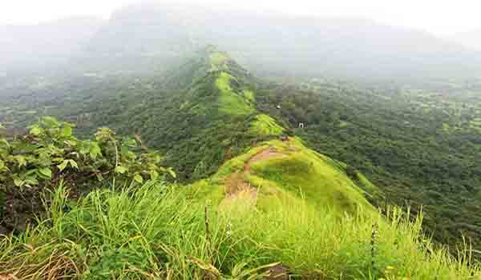

Tikona Fort is a dominant hill fortress of Konkan’s Pawan Maval region. This is Maharashtra’s popular one-day trekking spot. Locally, it is famous by the name Vitandgad. Situated on top of the Tikona peak, this fort has an altitude of 3633 feet from the sea level.
If you take a look at its present-day geography, it resembles a triangle and thus named as Tikona. Large fortifications, seven water tanks filled with crystal clear water, large doorways, and spectacular surrounding views from its bastion sums up the beauty of this place. Tikona Fort’s entrance itself represents beauty with sophistication. As soon as you pass through it, you will witness the presence of Buddhist and Satavahana Caves within.
Both types of caves have great significance in Indian history. Besides, there’s a small Trimbakeshwar Mahadev temple inside which revives the spiritual beliefs of the first residents of this fort. With no wonders, Tikona Fort is blessed with some stunning landscapes attracting heaps of trekking enthusiasts and those who love Mother Nature. The moment you trek to the topmost summit of this fort, you have the liberty to enjoy the panoramic view of the vastly stretched Maval region.
Tung Fort, Bhatrashi Hill, Jambhul Hill, Lohagad, Fagne dam, and Visapur are some sightseeing delights from the topmost position of this Tikona Fort.
How to Reach:
Tikona Fort is situated at a distance of 120 km from Mumbai and 60 km from pune.
Get down at Lonavala-> Kamshet-> Tikona Peth.
Best Time to visit:
Tikona Fort is an all-season tourist attraction in India. You can plan your visit at any point of time; as every season here portrays a different beauty of the landscape.